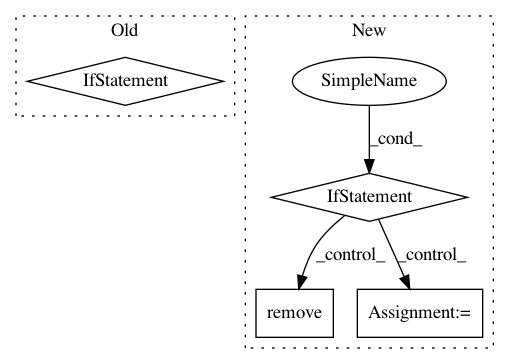

9b2940f5c418a0315f6de32239021fa1532db319,tensorlayer/models/core.py,Model,__call__,#Model#Any#Any#,76
Before Change
z = memory[layer.name]
else:
// FIXME: not sure if there is a better way
if is_train is not None:
layer.is_train = is_train
else:
layer.is_train = self.is_train
// FIXME: assume each layer has only one prev layer
// z = layer.forward(z)
z = layer(z)
memory[layer.name] = z
results.append(z.outputs)
After Change
inputs = tf.convert_to_tensor(inputs)
// FIXME: currently using self._outputs to judge static network or dynamic network
if self._outputs is not None:
// self._inputs and self._outputs are defined when the model is created
// convert inputs to list for convenience
// inputs_list = inputs if isinstance(inputs, list) else [inputs]
outputs_list = self._outputs if isinstance(self._outputs, list) else [self._outputs]
results = list()
memory = dict()
for out in outputs_list:
stacked_layers = list()
current = out
while current is not None:
stacked_layers.append(current)
// FIXME: assume each layer has only one prev layer
current = current._input_layer
if isinstance(self.inputs, list):
idx_of_input = self._find_idx_of_inputs(stacked_layers[-1])
z = inputs[idx_of_input]
else:
z = inputs
for layer in stacked_layers[::-1]:
if layer.name in memory:
z = memory[layer.name]
else:
// FIXME: not sure if there is a better way
layer.is_train = is_train if is_train is not None else self.is_train
// FIXME: assume each layer has only one prev layer
// z = layer.forward(z)
z = layer(z)
memory[layer.name] = z
results.append(z)
if not isinstance(self._outputs, list):
return results[0]
else:
return results
else:
// self._inputs and self._outputs are NOT defined when self is created (eager mode)
attr_list = [attr for attr in dir(self) if attr[:2] != "__"]
attr_list.remove("weights")
for idx, attr in enumerate(attr_list):
try:
if isinstance(getattr(self, attr), Layer):
getattr(self, attr).is_train = is_train if is_train is not None else self.is_train
except Exception:
pass
return self.forward(inputs, **kwargs)
@property
def weights(self):
if self._weights is not None and len(self._weights) > 0:
// self._weights already extracted, so do nothing
In pattern: SUPERPATTERN
Frequency: 3
Non-data size: 4
Instances
Project Name: tensorlayer/tensorlayer
Commit Name: 9b2940f5c418a0315f6de32239021fa1532db319
Time: 2019-01-25
Author: zhangjqsmiling@gmail.com
File Name: tensorlayer/models/core.py
Class Name: Model
Method Name: __call__
Project Name: microsoft/nni
Commit Name: 58d5c2faf0303751e432a4f99af19ac25e3065fb
Time: 2021-02-21
Author: Quanlu.Zhang@microsoft.com
File Name: nni/retiarii/converter/graph_gen.py
Class Name: GraphConverter
Method Name: merge_aten_slices
Project Name: microsoft/nni
Commit Name: acc311dd3e15135ca35f69b0183e5b0f9f4beadf
Time: 2019-04-27
Author: 15094695770@163.com
File Name: tools/nni_gpu_tool/gpu_metrics_collector.py
Class Name:
Method Name: check_ready_to_run